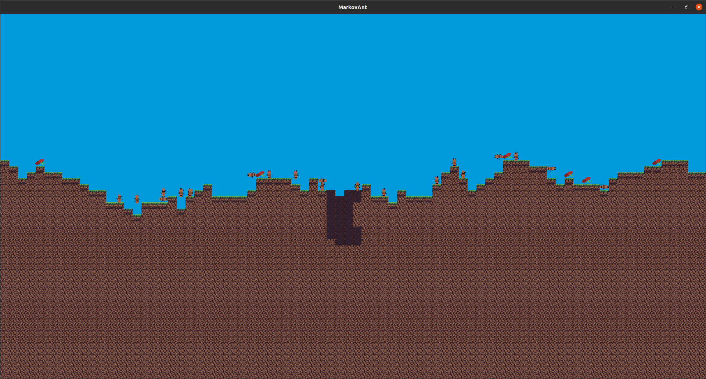

Première partie du projet
Table of Contents
2. Jeu de la vie
2.1. Code
L'entièreté du jeu se fait avec un viewport qui contient la fenêtre de jeu, le renderer, et la grille de jeu. La simulation se fait alors dans la boucle d'événement du viewport.

2.2. Fonctionnalités
En plus du fonctionnement normal du jeu de la vie, nous avons ajouté :
- sauvegarde/chargement de configuration (s/l)
- contrôle de la vitesse de la simulation (flèches gauche/droite)
- une pause de la simulation pour mettre des perturbations (p)
- sélection entre mode torique ou non (b)
- zoom de la fenêtre (molette ou +/- sur le pavé numérique)
- redémarrage de la simulation (r)
Toutes ces fonctionnalités se font par des appuis de touches
3. Chef-d'oeuvre
3.1. Principe
Vous contrôlez une reine fourmi qui doit développer sa fourmilière en faisant naître de nouvelles fourmis. Les ouvrières vous permettent de récolter de la nourriture et les soldates de combattre les ennemis qui veulent vous nuire.
Vous ne pouvez que déplacer la reine et gérer le ratio de fourmis soldates/ouvrières que vous ferez naître, vous ne pourrez interagir avec vos sujets qu'en leur suggérant un endroit ou une action, mais elles décideront elles-même de leurs déplacements et actions.

3.2. Fonctionnement du code
3.2.1. Graphismes
L'ensemble des graphismes est gérée par un "viewport", qui contient les éléments de SDL et les structures du jeu.
Les fonctions du viewport englobe l'entièreté du code car presque toutes les autres fonctions sont dans celles du viewport.

3.2.2. Monde
Le monde est contenu dans une variable de type "Level", qui contient sa taille et sa seed, les blocs qui le composent, et les entités qui y vivent.
3.2.3. Entités
Chaque entité est défini par ses PV, son type d'entité, son état, et sa cible.
Chaque type a une matrice associée pour les chaînes de Markov.
3.2.4. Gameplay/IA
L'IA de chaque type d'ennemi est géré à l'aide des chaînes de Markov et on met à jour l'état d'une entité quand elle a fini sa tâche.
3.2.5. Boucle d'événement